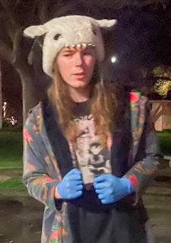

Welcome to the website of
Felix Moses
- freelance developer
- budding jounalist
- community orginizer
I'm living in Davis CA and spend most of my time working with The Davis Night Market, as well as other projects I'm not at the liberty to discuss.